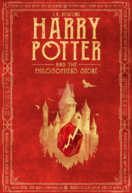
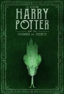
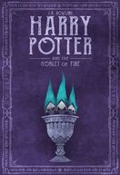
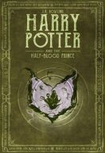

Harry Potter y la Piedra Filosofal
Harry Potter se ha quedado huérfano y vive en casa de sus abominables tíos y el insoportable primo Dudley. Harry se siente muy triste y solo, hasta que un buen día recibe una carta que cambiará su vida para siempre. En ella le comunican que ha sido aceptado como alumno en el Colegio Hogwarts de Magia. A partir de ese momento, la suerte de Harry da un vuelco espectacular. En esa escuela tan especial aprenderá encantamientos, trucos fabulosos y tácticas de defensa contra las malas artes. Se convertirá en el campeón escolar de Quidditch, especie de fútbol aéreo que se juega montado sobre escobas, y hará un puñado de buenos amigos... aunque también algunos temibles enemigos. Pero, sobre todo, conocerá los secretos que le permitirán cumplir su destino. Pues, aunque no lo parezca a primera vista, Harry no es un chico común y corriente: ¡es un verdadero mago!

Harry Potter y la Camara de los Secretos
Tras derrotar una vez más a lord Voldemort, su siniestro enemigo en Harry Potter y la piedra filosofal, Harry espera impaciente en casa de sus insoportables tíos el inicio del segundo curso del Colegio Hogwarts de Magia. Sin embargo, la espera dura poco, pues un elfo aparece en su habitación y le advierte que una amenaza mortal se cierne sobre la escuela. Así pues, Harry no se lo piensa dos veces y, acompañado de Ron, su mejor amigo, se dirige a Hogwarts en un coche volador. Pero ¿puede un aprendiz de mago defender la escuela de los malvados que pretenden destruirla? Sin saber que alguien había abierto la Cámara de los Secretos, dejando escapar una serie de monstruos peligrosos, Harry y sus amigos Ron y Hermione tendrán que enfrentarse con arañas gigantes, serpientes encantadas, fantasmas enfurecidos y, sobre todo, con la mismísima reencarnación de su más temible adversario.
Harry Potter y el Prisionero de Azkaban
Igual que en las dos primeras partes de la serie, Harry aguarda con impaciencia el inicio del tercer curso en el Colegio Hogwarts de Magia. Tras haber cumplido los trece años, solo y lejos de sus amigos, Harry se pelea con su bigotuda tía Marge, a la que convierte en globo, y debe huir en un autobús mágico. Mientras tanto, de la prisión de Azkaban se ha escapado un terrible villano, Sirius Black, un asesino en serie con poderes mágicos que fue cómplice de lord Voldemort y que parece dispuesto a borrar a Harry del mapa. Y por si fuera poco, Harry deberá enfrentarse también a unos terribles monstruos, los dementores, seres abominables capaces de robarle la felicidad a los magos y de eliminar todo recuerdo hermoso de aquellos que osan mirarlos. Lo que ninguno de estos malvados personajes sabe es que Harry, con la ayuda de sus fieles amigos Ron y Hermione, es capaz de todo y mucho más.

Harry Potter y el Caliz de Fuego
Tras otro abominable verano con los Dursley, Harry se dispone a iniciar el cuarto curso en Hogwarts, la famosa escuela de magia y hechicería. A sus catorce años, a Harry le gustaría ser un joven mago como los demás y dedicarse a aprender nuevos sortilegios, encontrarse con sus amigos Ron y Hermione y asistir con ellos a los Mundiales de quidditch. Sin embargo, al llegar al colegio le espera una gran sorpresa que lo obligará a enfrentarse a los desafíos más temibles de toda su vida. SI logra superarlos, habrá demostrado que ya no es un niño y que está preparado para vivir las nuevas y emocionantes experiencias que el futuro le depara.
Harry Potter y la Orden del Fenix
Las tediosas vacaciones de verano en casa de sus tíos todavía no han acabado y Harry se encuentra más inquieto que nunca. Apenas ha tenido noticias de Ron y Hermione, y presiente que algo extraño está sucediendo en Hogwarts. En efecto, cuando por fin comienza otro curso en el famoso colegio de magia y hechicería, sus temores de vuelven realidad. El Ministerio de Magia niega qu Voldemort haya regresado y ha iniciado una campaña de desprestigio contra Harry y Dumbledore, para lo cual ha asignado a la horrible profesora Dolores Umbridge la tarea de vigilar todos sus movimientos. Así pues, además de sentirse solo e incomprendido, Harry sospecha que Voldemort puede adivinar sus pensamientos, e intuye que el temible mago trata de apoderarse de un objeto secreto que le permitiría recuperar su poder destructivo.

Harry Potter y el Misterio del Principe
Con dieciséis años cumplidos, Harry inicia el sexto curso en Hogwarts en medio de terribles acontecimientos que asolan Inglaterra. Elegido capitán del equipo de quidditch, los ensayos, los exámenes y las chicas ocupan todo su tiempo, pero la tranquilidad dura poco. A pesar de los férreos controles de seguridad que protegen la escuela, dos alumnos son brutalmente atacados. Dumbledore sabe que se acerca el momento, anunciado por la Profecía, en que Harry y Voldemort se enfrentarían a muerte: «El único con poder para vencer al Señor Tenebroso se acerca... Uno de los dos debe morir a manos del otro, pues ninguno de los dos podrá vivir mientras siga el otro con vida» El anciano director solicitará la ayuda de Harry y juntos emprenderán peligrosos viajes para intentar debilitar al enemigo, para lo cual el joven mago contará con un viejo libro de pociones perteneciente a un misterioso personaje, alguien que se hace llamar Príncipe Mestizo.

Harry Potter y las Reliquias de la Muerte
La fecha de acerca. Cuando cumpla diecisiete años, Harry perderá el encantamiento protector que lo mantiene a salvo. El anunciado duelo a muerte con lord Voldemort es inminente, y la casi imposible misión de encontrar y destruir los restantes Horrocruxes, más urgente que nunca. Ha llegado la hora final, el momento de tomar decisiones difíciles. Harry debe abandonar la calidez de La Madriguera para seguir sin miedo ni vacilaciones el inexorable sendero trazado para él. Consciente de lo mucho que está en juego, tendrá que buscar en su interior la fuerza necesaria que lo impulse en la vertiginosa carrera para enfrentarse a su destino.